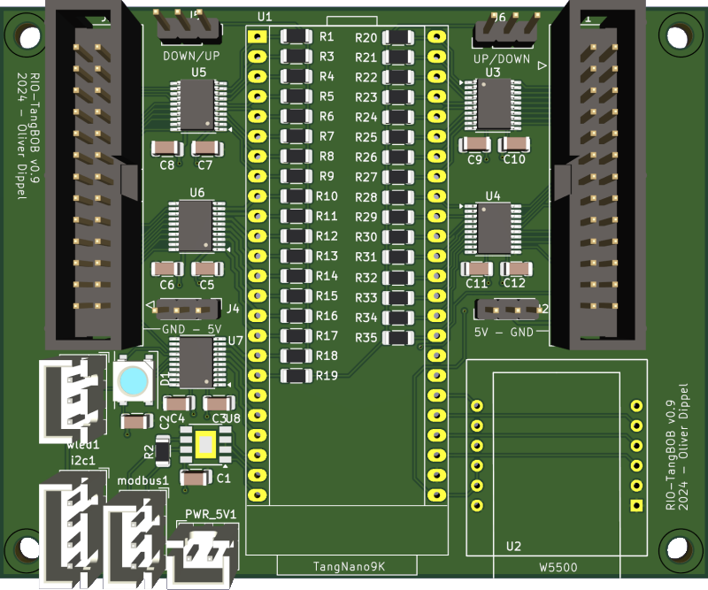

# Tangbob

Tangbob with one 5x china BOB
* Board: [Tangbob](https://github.com/multigcs/riocore/blob/main/riocore/boards/Tangbob/README.md)
* Config-Path: tests/unit/data/full/Tangbob.json
* Output-Path: tests/unit/output/Tangbob
* Toolchain: gowin
* Protocol: UDP
## Axis/Joints
| Axis | Joint | Plugin | Home-Seq. |
| --- | --- | --- | --- |
| X | 0 | stepdir0 ([stepdir](https://github.com/multigcs/riocore/blob/main/riocore/plugins/stepdir/README.md)) | 2 |
| Y | 1 | stepdir1 ([stepdir](https://github.com/multigcs/riocore/blob/main/riocore/plugins/stepdir/README.md)) | 2 |
| Z | 2 | stepdir2 ([stepdir](https://github.com/multigcs/riocore/blob/main/riocore/plugins/stepdir/README.md)) | 1 |
## Plugins
| Type | Info | Instance | Image |
| --- | --- | --- | --- |
| [breakout](https://github.com/multigcs/riocore/blob/main/riocore/plugins/breakout/README.md) | 5Axis China-BOB | china-bob5x0 |  |
| [w5500](https://github.com/multigcs/riocore/blob/main/riocore/plugins/w5500/README.md) | udp interface for host comunication | w55000 |
|
| [w5500](https://github.com/multigcs/riocore/blob/main/riocore/plugins/w5500/README.md) | udp interface for host comunication | w55000 |  |
| [wled](https://github.com/multigcs/riocore/blob/main/riocore/plugins/wled/README.md) | ws2812b interface | wled0 |
|
| [wled](https://github.com/multigcs/riocore/blob/main/riocore/plugins/wled/README.md) | ws2812b interface | wled0 |  |
| [modbus](https://github.com/multigcs/riocore/blob/main/riocore/plugins/modbus/README.md) | generic modbus plugin | modbus0 |
|
| [modbus](https://github.com/multigcs/riocore/blob/main/riocore/plugins/modbus/README.md) | generic modbus plugin | modbus0 |  |
| [blink](https://github.com/multigcs/riocore/blob/main/riocore/plugins/blink/README.md) | blinking output pin | blink0 |
|
| [blink](https://github.com/multigcs/riocore/blob/main/riocore/plugins/blink/README.md) | blinking output pin | blink0 |  |
| [i2cbus](https://github.com/multigcs/riocore/blob/main/riocore/plugins/i2cbus/README.md) | I2C-Bus | i2cbus0 |
|
| [i2cbus](https://github.com/multigcs/riocore/blob/main/riocore/plugins/i2cbus/README.md) | I2C-Bus | i2cbus0 |  |
| [stepdir](https://github.com/multigcs/riocore/blob/main/riocore/plugins/stepdir/README.md) | step/dir output for stepper drivers | stepdir0, stepdir1, stepdir2 |
|
| [stepdir](https://github.com/multigcs/riocore/blob/main/riocore/plugins/stepdir/README.md) | step/dir output for stepper drivers | stepdir0, stepdir1, stepdir2 |  |
| [bitin](https://github.com/multigcs/riocore/blob/main/riocore/plugins/bitin/README.md) | single input pin | bitin0, bitin1, bitin2 |
|
| [bitin](https://github.com/multigcs/riocore/blob/main/riocore/plugins/bitin/README.md) | single input pin | bitin0, bitin1, bitin2 |  |
|
# Pins
| Plugin | ID | Name | Board | Alias |
| --- | --- | --- | --- | --- |
| w5500 | w55000 | mosi | 32 | |
| | | miso | 48 | |
| | | sclk | 31 | |
| | | sel | 49 | |
| | | rst | - | |
| | | intr | - | |
| wled | wled0 | data | 54 | |
| modbus | modbus0 | tx | 57 | |
| | | rx | 69 | |
| | | tx_enable | 68 | |
| blink | blink0 | led | 10 | |
| i2cbus | i2cbus0 | sda | 56 | |
| | | scl | 55 | |
| stepdir | stepdir0 | step | 41 | |
| | | dir | 40 | |
| | | en | 42 | |
| | stepdir1 | step | 33 | |
| | | dir | 29 | |
| | | en | - | |
| | stepdir2 | step | 28 | |
| | | dir | 27 | |
| | | en | - | |
| bitin | bitin0 | bit | 39 | |
| | bitin1 | bit | 36 | |
| | bitin2 | bit | 37 | |
# Signals
| Plugin | ID | Name | Dir | Hal-Pin | Type | Description |
| --- | --- | --- | --- | --- | --- | --- |
| wled | wled0 | wled0.0_green | <- | (!halui.mode.is-auto and !axisui.error) or halui.program.is-paused | net | |
| | | wled0.0_blue | <- | halui.mode.is-auto | net | |
| | | wled0.0_red | <- | axisui.error | net | |
| bitin | bitin0 | bitin0.bit | -> | joint.0.home-sw-in | net | |
| | bitin1 | bitin1.bit | -> | joint.1.home-sw-in | net | |
| | bitin2 | bitin2.bit | -> | joint.2.home-sw-in | net | |
# Interface
## Host to FPGA
| POS | SIZE | NAME |
| --- | --- | --- |
| 0 | 32bits | RX_HEADER |
| 32 | 128bits | VAROUT128_MODBUS0_TXDATA |
| 160 | 32bits | VAROUT32_STEPDIR0_VELOCITY |
| 192 | 32bits | VAROUT32_STEPDIR1_VELOCITY |
| 224 | 32bits | VAROUT32_STEPDIR2_VELOCITY |
| 256 | 1bit | VAROUT1_WLED0_0_GREEN |
| 257 | 1bit | VAROUT1_WLED0_0_BLUE |
| 258 | 1bit | VAROUT1_WLED0_0_RED |
| 259 | 1bit | VAROUT1_WLED0_1_GREEN |
| 260 | 1bit | VAROUT1_WLED0_1_BLUE |
| 261 | 1bit | VAROUT1_WLED0_1_RED |
| 262 | 1bit | VAROUT1_WLED0_2_GREEN |
| 263 | 1bit | VAROUT1_WLED0_2_BLUE |
| 264 | 1bit | VAROUT1_WLED0_2_RED |
| 265 | 1bit | VAROUT1_STEPDIR0_ENABLE |
| 266 | 1bit | VAROUT1_STEPDIR1_ENABLE |
| 267 | 1bit | VAROUT1_STEPDIR2_ENABLE |
## FPGA to Host
| POS | SIZE | NAME |
| --- | --- | --- |
| 0 | 32bits | TX_HEADER |
| 32 | 32bits | TIMESTAMP |
| 64 | 16bits | MULTIPLEXED_INPUT_VALUE |
| 80 | 8bits | MULTIPLEXED_INPUT_ID |
| 88 | 128bits | VARIN128_MODBUS0_RXDATA |
| 216 | 32bits | VARIN32_STEPDIR0_POSITION |
| 248 | 32bits | VARIN32_STEPDIR1_POSITION |
| 280 | 32bits | VARIN32_STEPDIR2_POSITION |
| 312 | 1bit | VARIN1_BITIN0_BIT |
| 313 | 1bit | VARIN1_BITIN1_BIT |
| 314 | 1bit | VARIN1_BITIN2_BIT |
# LinuxCNC
## Hal-Graph

# JSON-Config
```
{
"name": "Tangbob",
"boardcfg": "Tangbob",
"description": "Tangbob with one 5x china BOB",
"_async": true,
"protocol": "UDP",
"plugins": [
{
"type": "breakout",
"node_type": "china-bob5x",
"uid": "china-bob5x0",
"pos": [
570.0,
210.0
],
"rotate": 0,
"pins": {
"SLOT:P1": {
"pin": "LEFT:P1"
},
"SLOT:P2": {
"pin": "LEFT:P2"
},
"SLOT:P3": {
"pin": "LEFT:P3"
},
"SLOT:P4": {
"pin": "LEFT:P4"
},
"SLOT:P5": {
"pin": "LEFT:P5"
},
"SLOT:P6": {
"pin": "LEFT:P6"
},
"SLOT:P7": {
"pin": "LEFT:P7"
},
"SLOT:P8": {
"pin": "LEFT:P8"
},
"SLOT:P9": {
"pin": "LEFT:P9"
},
"SLOT:P10": {
"pin": "LEFT:P10"
},
"SLOT:P11": {
"pin": "LEFT:P11"
},
"SLOT:P12": {
"pin": "LEFT:P12"
},
"SLOT:P13": {
"pin": "LEFT:P13"
},
"SLOT:P14": {
"pin": "LEFT:P14"
},
"SLOT:P15": {
"pin": "LEFT:P15"
},
"SLOT:P16": {
"pin": "LEFT:P16"
},
"SLOT:P17": {
"pin": "LEFT:P17"
}
}
},
{
"type": "w5500",
"pins": {
"mosi": {
"pin": "SPI:MOSI"
},
"miso": {
"pin": "SPI:MISO"
},
"sclk": {
"pin": "SPI:SCLK"
},
"sel": {
"pin": "SPI:SEL"
}
},
"uid": "w55000",
"pos": [
390.0,
530.0
],
"image": "w5500mini",
"rotate": 0,
"ip": "192.168.11.194"
},
{
"type": "wled",
"pins": {
"data": {
"pin": "WLED:DATA"
}
},
"signals": {
"0_green": {
"net": "(!halui.mode.is-auto and !axisui.error) or halui.program.is-paused",
"setp": ""
},
"0_red": {
"net": "axisui.error",
"setp": ""
},
"0_blue": {
"net": "halui.mode.is-auto",
"setp": ""
}
},
"uid": "wled0",
"pos": [
-100.0,
410.0
],
"image": "wled",
"rotate": 180,
"leds": 3
},
{
"type": "modbus",
"pins": {
"tx": {
"pin": "MODBUS:TX"
},
"rx": {
"pin": "MODBUS:RX"
},
"tx_enable": {
"pin": "MODBUS:TX_ENABLE"
}
},
"uid": "modbus0",
"pos": [
133.4071958840177,
616.0913438454436
]
},
{
"type": "blink",
"pins": {
"led": {
"pin": "10"
}
},
"uid": "blink0",
"pos": [
340.0,
190.0
],
"image": "led",
"rotate": 0
},
{
"type": "i2cbus",
"pins": {
"sda": {
"pin": "I2C:sda"
},
"scl": {
"pin": "I2C:scl"
}
},
"uid": "i2cbus0",
"config": {
"devices": {
"lm75_0": {
"type": "lm75",
"address": "0x48",
"subbus": "none"
}
}
},
"pos": [
80.3766088621519,
727.0547228632354
],
"sub_pos": {
"dev-lm75_0(0x48)": [
330.3766088621519,
727.0547228632354
]
}
},
{
"type": "stepdir",
"uid": "stepdir0",
"image": "stepper",
"pos": [
980.0,
540.0
],
"pins": {
"step": {
"pin": "china-bob5x0:X:step"
},
"dir": {
"pin": "china-bob5x0:X:dir"
},
"en": {
"pin": "china-bob5x0:ALL:en"
}
},
"is_joint": true,
"joint": {
"scale": -800.0,
"max_velocity": 25.0,
"min_limit": 0.0,
"max_limit": 230.0,
"home_search_vel": -10.0,
"home_latch_vel": -1.0,
"home_final_vel": 20.0
}
},
{
"type": "stepdir",
"uid": "stepdir1",
"image": "stepper",
"pos": [
980.0,
280.0
],
"pins": {
"step": {
"pin": "china-bob5x0:Y:step"
},
"dir": {
"pin": "china-bob5x0:Y:dir"
}
},
"is_joint": true,
"joint": {
"scale": 800.0,
"max_velocity": 25.0,
"min_limit": 0.0,
"max_limit": 160.0,
"home_search_vel": -10.0,
"home_latch_vel": -1.0,
"home_final_vel": 20.0
}
},
{
"type": "stepdir",
"uid": "stepdir2",
"image": "stepper",
"pos": [
980.0,
20.0
],
"pins": {
"step": {
"pin": "china-bob5x0:Z:step"
},
"dir": {
"pin": "china-bob5x0:Z:dir"
}
},
"is_joint": true,
"joint": {
"scale": -1600.0,
"max_velocity": 15.0,
"min_limit": -32.0,
"max_limit": 0.0,
"home_search_vel": 10.0,
"home_latch_vel": 1.0,
"home_final_vel": 10.0
}
},
{
"type": "bitin",
"uid": "bitin0",
"image": "proximity",
"pos": [
730.0,
830.0
],
"pins": {
"bit": {
"pin": "china-bob5x0:OPTO:in0",
"modifier": [
{
"type": "invert",
"pos": [
610.0,
810.0
]
}
]
}
},
"signals": {
"bit": {
"net": "joint.0.home-sw-in"
}
},
"name": "home-x"
},
{
"type": "bitin",
"uid": "bitin1",
"image": "proximity",
"pos": [
730.0,
760.0
],
"pins": {
"bit": {
"pin": "china-bob5x0:OPTO:in1",
"modifier": [
{
"type": "invert",
"pos": [
610.0,
780.0
]
}
]
}
},
"signals": {
"bit": {
"net": "joint.1.home-sw-in"
}
},
"name": "home-y"
},
{
"type": "bitin",
"uid": "bitin2",
"image": "proximity",
"pos": [
730.0,
690.0
],
"pins": {
"bit": {
"pin": "china-bob5x0:OPTO:in2",
"modifier": [
{
"type": "invert",
"pos": [
610.0,
750.0
]
}
]
}
},
"signals": {
"bit": {
"net": "joint.2.home-sw-in"
}
},
"name": "home-z"
}
],
"flow": {
"view": {
"scale": 1.3940435280641466,
"pos": [
-223.81214203894615,
2.0
]
},
"hal": {
"misc": [
825.3287543995666,
397.0547228632355
],
"spindle.0": [
833.8458862272005,
191.1069909269338
],
"joint.3": [
833.8408785714018,
103.12258752610734
],
"joint.2": [
829.9458670383008,
7.735890104503483
],
"joint.1": [
832.5425413937016,
-87.65080731710029
],
"joint.0": [
839.034227282204,
-186.93251627180555
]
},
"board": {
"pos": [
120.0,
220.0
],
"rotate": 0
}
},
"linuxcnc": {
"ini": {
"EMCMOT": {
"SERVO_PERIOD": 500000
}
}
}
}
```